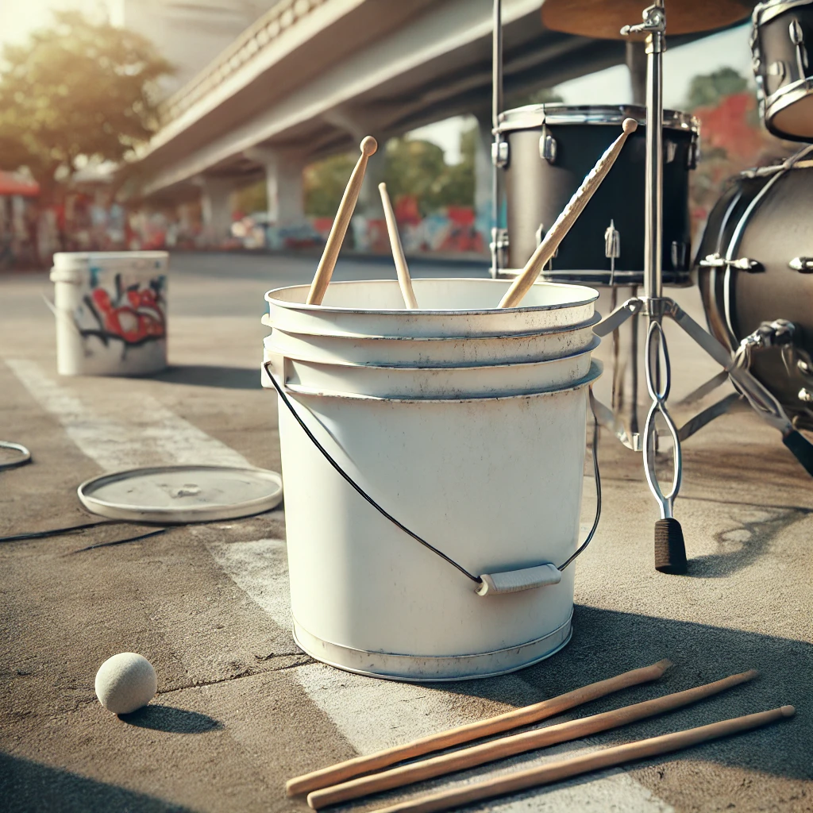
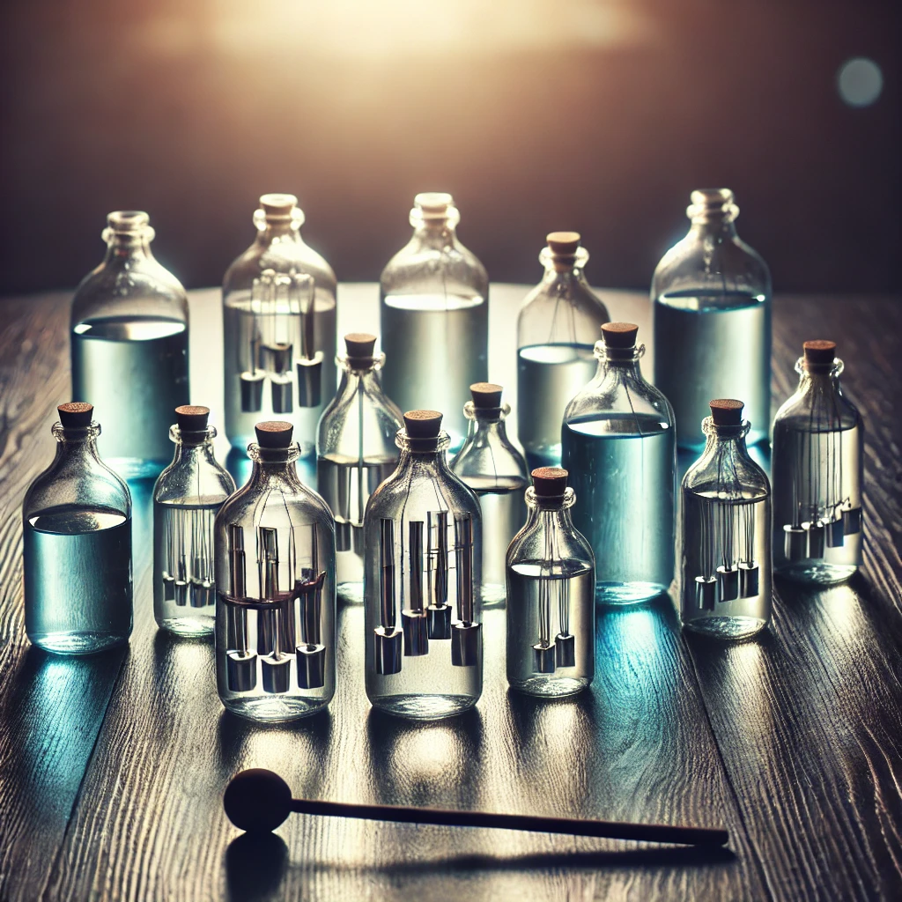

PRODUCTS
ALL OUR PRODUCTS ARE TOP OF THE LINE AND ARE RECYCLED. WE ENCOURAGE SAFE AND CLEAN PRODUCTS FOR OUR CLIMATE AND THAT IS EXACLY WHAT WE DELIVERED.
- BUCKET DRUM SET - ($20) Recycled from old worn and torn buckets and turned into a musical necessity! DRUM STICKS NOT INCLUDED
CUP PERC SET - ($10) Recycled from old cups and bells, these percs will add some groove to your music!
GLASS BOTTLE MELODY SET - ($10) Recycled from old glass and plastic bottels, these are a great way to improve your melodys and musical ear!
STRAW DRUM STICK SET - ($5) Recycled straws or condensed and glued together to form solid working drum sticks to help you, rock out!